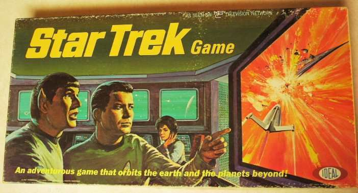
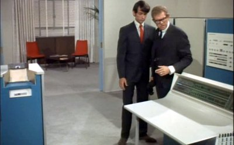
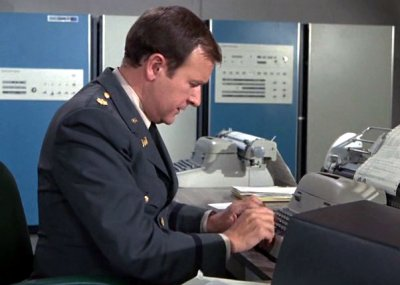
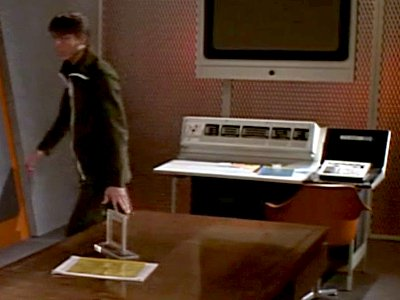

A Textual Trek
In other articles, I've looked at games like ROCKET and Lunar Lander. Those games used spaceships in a realistic context. This article will look at a game from roughly the same time period as those simulations but that used spaceships in an entirely fictional context. That fictional context actually pre-dated the Moon landing itself.
The Context
The original Star Trek television series aired on NBC from 8 September 1966 to 3 June 1969. When it was canceled, it immediately went into syndication.

Given the popularity of the show, it was inevitable that games based on the series would be created. This happened fairly early on. In fact, the earliest such game I'm aware of, albeit a board game, was created in 1967 when the show was still on the air. That game was simply called Star Trek Game and was made by Ideal Toys.
However, my interest here is not on the first known board game for Star Trek but, instead, the first known computer game. In terms of what history has left us, the very earliest incarnation in a computer context was, quite simply, called Star Trek and dates from 1971. Actually, there are two such versions to be aware of:
- Star Trek by Mike Mayfield
- Star Trek by Don Daglow
I'm going to be focusing on Mike Mayfield's version here as it seems to be the earlier of the two, with Daglow's being from 1972. This particular version of the game became very widely played early on, eventually reaching the microcomputer era of the late 1970s, with a version capable of running on just about any machine that could run a BASIC variant.
Not only was the game widely distributed but type-in listings of the game were very prevalent, which I'll attempt to show here. Type-in listings during this time period encouraged exploration of the code and the creation of variants.
By contrast, Daglow's version appears to have been solely for the DEC PDP-10 and was distributed through the DEC User's Society's (DECUS) which promoted the exchange of user-developed software, largely via magnetic tape. DECUSCOPE was the publication of DECUS that contained work like Daglow's. In a "Playing Catch-Up" interview with Daglow, he says:
The Mike Mayfield Star Trek sector-based game, which is by far the best known mainframe computer game of the 1970s was already on our system in 1971.
People sometimes refer to the Mayfield game as "Star Trek, the text game" and the Daglow version as "Star Trek, the script game" and the reason for that is provided by Daglow:
There were sample games that spoke "in character" when they printed text for the character to read. For a kid who was majoring in playwriting, combining the two ideas in a Star Trek script game came very naturally.
The mechanics of the game were such that dialogue of characters on the Enterprise was used to describe the events of a battle with an enemy spaceship. In Daglow's own words, the game was really a board strategy game that was executed in the context of a computer.
The Early History
First, let's consider the context of how a lot of people would have likely come across Mayfield's version of the game. At one point, this most likely would have been in a form called "SPACWR" that was published in the March 1975 book 101 BASIC Computer Games. Notwithstanding the intro text that says the program is "This program is an incredibly complete version of spacewar", this should not be confused with the game Spacewar!, which was written by Steve Russell back in 1962.
The listing for the program indicates that the original version was written by "Mike Mayfield, Centerline Engineering." So let's use that as our starting point. We'll have to first work backwards from that source. Then we'll come back to that source and work forwards. I've found that this approach is perhaps one of the easier ways to digest the history of this particular game.
Regarding the initial implementation of Star Trek, there is a Games of Fame article by Maury Markowitz well worth considering. Apparently, in December of 2000, Mike Mayfield — yep, the author of the game! — sent information to Maury to correct some history that had been making the rounds.
Back in 1971 I was a senior in high school. My school didn't have any computers, but I had managed to “use” (read “steal”) an account on a Sigma 7 at University of California, Irvine. I was trying to teach myself BASIC from a book. At the time there was a program that ran on a vector graphics terminal on the Sigma 7 that was a simple “shoot-em-up” space war game. I wanted to make a game like that, but I only had access to an ASR-33 Teletype non-video terminal. Mike Mayfield
But wait a second. If Mike Mayfield at the time was a “senior in high school,” who was this Centerline Engineering he was working for?
Centerline Engineering and Custom Data were actually just figments of my imagination. They were possible names for a company I wanted to start, but never did. I was just an 18 year old kid on a stolen computer account driving to UC Irvine on my Sears motorcycle. Mike Mayfield
Given the nature of the device he was programming on, Mike's game was interacted with by feeding punched paper tape into the SDS (Scientific Data Systems) Sigma 7 on a ten character-per-second teletype terminal. This is the ASR-33 ("Automatic Send and Receive") that he's referring to, which was an electromechanical teleprinter.
The Cultural Sigma 7
As a bit of a side note, the Sigma 7 actually made it's appearance in popular media at the time. For example, it appeared in a 1966 episode of The Monkees (Season 1, Episode 3 called “Monkee vs. Machine”). In this episode a toy company uses a Sigma 7 to design their toys.
The Sigma 7 also makes an appearance in a 1966 episode of I Dream of Jeannie (Season 2, Episode 10 called “The Girl Who Never Had a Birthday”). In this episode, Roger uses “Eric”, in actuality a Sigma 7, to work out Jeannie's birthday using a list of her personality traits combined with a book on astrology.
Another example where the Sigma 7 appeared is 1971's TV movie City Beneath the Sea. Here a Sigma 7 processor, along with tape drives, appears outside Retired Admiral Michael Matthews' office as well as a programmer's console inside his office. The machine is used to calculate missile trajectories in the show.
Just to give you a more situated realistic view of the machine, here's a 1966 SDS Sigma 7, which is the machine that Mike would have been connecting into.
While that was the machine itself, Mike would have communicated with it via the Teletype ASR 33, which is shown here for reference.
The 1971 Version
It seems Mike Mayfield and friends used Star Trek as an inspiration for their own game as it evolved.
A bunch of my other geek friends from high school and I spent a lot of hours brainstorming what we could do if we didn't have a video terminal. Since I was the only one in the group that had any knowledge of computers (little as it was), we ended up coming up with a lot of unimplementable ideas. One idea that did stick was the idea of printing a galactic map and a star map to give you some idea what to shoot at, and having phasors reduce power exponentially, like they would if they shot in all directions. Mike Mayfield
This iteration of the program was certainly constrained.
I didn't have any disk space allocation, so I had to punch a paper tape each day when I finished and load it back in again the next day. Working on a 10 character per second terminal forced me to keep the program small. Otherwise, I probably would have gone crazy adding feature after feature. Mike Mayfield
So the start of the history here is that two years after the cancellation of the Star Trek show, Mike Mayfield created a game based on the show from a more generic idea of having a space battle.
It's worth noting here that this 1971 version of the source code is, so far as we know, entirely lost. But that 1971 implementation would make its way, largely intact, to a 1972 implementation.
The 1972 Version
Mayfield apparently got his hands on a Hewlett-Packard programmable calculator and, as he recounts it, he would go to the local HP sales office several times for help on programming the thing. Apparently Mayfield had mentioned his space combat/”Star Trek” program to them because in his account of events, they offered him the use of their local computer if he would port the game to their system. This local computer was an HP 2000C and ran BASIC in a time-share process.
In November 1968, HP released the 2000A Timeshare System, later known as HP 2000/Access.
That's an image of an HP 2000F. Later models of the 2000 series, labeled B through F, used newer versions of the underlying CPU as they were introduced but were essentially the same in most respects.
So Mike Mayfield had to write his program on this new machine with its specific BASIC variant.
Since their BASIC variant was so different from the BASIC on the Sigma 7 and the program had gotten pretty messy by then from all the changes, I ended up just doing a rewrite. The program was added to HP's public domain library, which is where Dave Ahl got it. Mike Mayfield
So that's the next bit of history here. In late 1972, Mike ported his game to HP Time-Shared BASIC on an HP 2000C. I'm not very clear on how and to what extent that particular variant circulated around but this version, very closely aligned to the 1971 version, eventually became more widely distributed in 1973.
The 1973 Version
I say “1973 version” here but, in one respect, what I'm talking about is the 1972 version as it was distributed in 1973.
HP got access to the program Mike had rewritten and released it in their Contributed Software tape library catalog. This is what's available in the archive called HP_2000_Contributed_Library_Rev_1638. Specifically in the Z905 directory, there is a version called STTR1. You can also see an annotated version of this BASIC STTR1 source.
So our historical route has given us the following variations:
- 1971 — Sigma BASIC version
- 1972 — HP BASIC version
- 1973 — HP Library inclusion
Play the Original?
It's difficult to play the original incarnation of Mike Mayfield's game or, rather, the "original" even from 1973. The only way to do this in a way that's even appropriately retro would be to try to play it on an HP 2000 emulator. You can attempt to use SIMH for this. This program attempts to simulate several minicomputer variants.
If you want to save yourself some pain, you might want to try to find already running simulators. Two known ones are the following:
- mickey.publicvm.com
- hp2000.brighton.ac.uk
To do this, on your system of choice launch a terminal that has access to a telnet program. You'll need one that won't be confused by the HP's end-of-line characters. Then pick one of the above endpoints and telent into it:
telnet hp2000.brighton.ac.uktelnet mickey.publicvm.com
Once in the system, you'll need to do the following commands one after the other:
CTRL+m,CTRL+j
Finally, enter the following one after the other:
HELLO-T001,HP2000,1GROUPSEXECUTE-*STTR1
That should work for you to get you playing. Quitting is a little trickier. Once you're in game, you can use the command 7 and then command 2. Then enter a long string of characters at the prompt for using the calculator. Theoretically this causes a string overflow and breaks out of the program although I've found this doesn't always happen. But if it does happen for you, then you can just type the following:
BYE
1973 Variants
According to Mayfield's account, it was apparently the 1973 version of Star Trek that a guy named David Ahl got his hands on. This is going to take us back to that 101 BASIC Computer Games book we started with.
David Ahl worked at Digital Equipment Corporation (DEC) in the education department and his main job was publishing a newsletter which often included type-in games. Ahl was apparently so impressed with Star Trek that he ported it to DEC BASIC and sent it out in a newsletter that DEC distributed. Now here's where we get a little source material confusion in terms of surviving historical artifacts.
First I'll note that Pete Turnbull created a historical Star Trek game page. However, I've found at least some questionable things on there and the provenance is often entirely unstated or just assumed for many of the artifacts. That being said, Turnbull lists one version as the following:
- spacwr.bas - DEC BASIC conversion of Mike Mayfield's STTR1, 1973
This version is different than what's printed in 101 BASIC Computer Games but there are a few source code lines in question that differ from the Mayfield version and that appear in the book, suggesting this might have been an early incarnation of what went in the book. I'll come back to all that when we dig into the code.
Turnbull then lists another variant that he says is a DEC BASIC-PLUS version from David Ahl, and presumably from around the 1973 timeframe but, in fact, this appears to be an entirely different variant from the 1980s. This notion of inaccurate variants and the historical record is important so let's do a brief aside on this.
Historical Caution and Artifacts
Pete Turnbull lists the following variant on this page:
- strtr1.bas - DEC BASIC-PLUS, probably from David Ahl (instructions)
- strtrk.bas - DEC BASIC-PLUS, probably from David Ahl (the game)
However, if you do a little digging you'll find this variant comes from the early 1980s. Specifically, looking through an archived boot disk called RL2 that hosts the RSTS/E v7.0 operating system, you'll find the following directory listing:
DIR
Name .Ext Size Prot Date SY:[11,70]
ACEY .BAS 5 < 60> 31-Oct-76
TREK .BAS 16 < 60> 31-Oct-76
TREK .DOC 9 < 60> 31-Oct-76
ANIMAL.BAS 5 < 60> 31-Oct-76
STRTRK.BAS 27 < 60> 31-Mar-81
STRTR1.BAS 9 < 60> 31-Mar-81
ADVENT.DOC 4 < 60> 20-Jul-85
ADVENT.SAV 93 <124> 20-Jul-85
ADVENT.VAR 22 < 60> 20-Jul-85
ADVTXT.TXT 125 < 60> 20-Jul-85
SYSMAC.SML 42 < 60> 13-Mar-77
HELLO .MAC 1 < 60> 13-Mar-77
BOOT .MAC 24 < 60> 13-Mar-77
Ntoice the files "STRTRK.BAS" and "STRTR1.BAS"? Those are, at least, the filenames that Turnbull listed and they are dated to March of 1981. But are these actually the same game? Well, to do that you have to either access their source code or play them.
The way I found to do this was to access an online PDP 11/70 emulator. If you want to try to access this yourself, here are the steps I had to do in the web-based console. The bolded parts are what I typed in.
- Boot> boot rl2
- Option: CTRL+J
- Table suboption? EXIT
- DD-MMM-YY? 31-OCT-81
- 12:00 PM? 9:32
- Command File Name? CTRL+J
At this point you'll see a message about "Detaching . . ." and you'll be able to type again. Do the following:
- I11,70
- Password: PDP
This might give you a message about "Welcome to RSTS/E v7.0 time sharing" and a "Ready" prompt. Then you can type the following:
- DIR
- RUN STRTRK
And with that "simple" bit of steps, you should be off to the races and able to play the game. The main thing to note is that the opening text — "AS COMMANDER OF THE UNITED STARSHIP ENTERPRISE" — matches the above mentioned source files provided by Turnbull but is different than any of the text provided by the Mayfield game or by Ahl's versions of it.
Incidentally, in that directory listing I showed you, you might also notice the mention of "TREK.BAS" and "TREK.DOC". Those, too, are relevant because they are also listed by Turnbull on his archived list but also seem inaccurate on a few points. We'll jump back to that one as I continue this history.
This aside is a cautionary tale of being a historian when there are many artifacts to deal with. You have to find corroborating evidence, particularly if the source files in question do not offer details such as date or authorship. I should also note that everthing I write here is a moment in time. By the time you read this, it's possible Pete updated his own site as he learns more about his sources.
More on 1973 Variants
Pete Turnbull mentions two other sources in his list:
- TREK.BAS - adapted for RSTS-11 BASIC, by Aron Insinga from 1973
- TREK.DOC - instructions for TREK.BAS
You can follow the steps from the previous section and do the following to run that version of the game:
- RUN TREK
If you do run that game and ask it for instructions, you will find the instructions are exactly that as listed in the above "TREK.DOC". This mentions a date of 20 July 1973 and an author of Aron K. Insinga as well as something called "Project Delta." Turnbull apparently received a communication from Aron about his version. According to Aron:
Back in the 1970s there was a computer center in Delaware that was used by the high schools in the state and was staffed by students. We had the 2nd RSTS-11 system that DEC sold. Kids were using the Project DELTA Teletype and DataPhone at their school to make long distance calls to a time-sharing system at the HP facility in Avondale, PA. They were using the system for hours to play this Star Trek game and the phone bill was a big problem. I was told that it would help a lot if I could get it to run on our RSTS-11 (PDP-11/20) system at Project DELTA.
However, the "TREK.BAS" file that is provided is definitely not from 1973 and doesn't seem to match the game. Notice, for example, in the source that "Romulans" are mentioned. Further, digging into the source itself you can see LOCATE and COLOR commands, among others, that were intended for use on interactive terminals with color support. That means the DEC VT240's at a minimum, which puts us in the 1980s. And that makes a great deal of sense because the source code also indicates a version “BY ENSIGN SOFTWARE” that is copyrighted as 1982.
I do have what appears to be the actual version from Aron in trek-aron.bas. This was pulled from an RSTS-11 library index, the specific operating system apparently being an RSTS V4A-12, with the index itself being from the DECUS catalog.
I'll note one more variant here that does seem to be from 1973, specifically 5 April 1973. This was a variant of the game, apparently written at the University of Texas, as a Taurus BASIC variant by Grady Hicks and Jim Korp. You can see the source of this in ut-trek.bas. Interestingly, this version mentions that the "GENERAL IDEA STOLEN FROM PENN. U."
A side note to this version is that some guys named Dave Matuszek and Paul Reynolds, at the University of Texas-Austin, played the game and noted that the Hicks version they played threw a lot of long quotes from Marcus Aurelius at the player. I mention this because of some interesting detective work done by "Peter B" in his post The Game Detective: The 'Marcus Aurelius' Version of Star Trek.
The date of this latter version, April 1973, is interesting because we are now finally getting back to David Ahl's work and the publication of 101 BASIC Computer Games. This book actually saw three printings: July 1973, April 1974, and March 1975. Apparently Ahl's update of Mayfield's 1972 version was in the earliest printing. Aron's version could have been based on that, therefore, while that from Hicks and Korp was not.
This actually takes us to another variant, believe it or not. The context here for Ahl's book is that the first printing in 1973 had the programs written in PDP-11 RSTS BASIC. The programs from that book were ported to OS/8 BASIC by Kay Fisher. This was so that the programs could run on a PDP-8.
- spacwr-os8.bas - game
- spacwr-os8-in.bas - instructions
Since this is most definitely a direct port, we still have the title of "spacwr." The listing in Ahl's book does say “SPACEWAR BASED ON STAR TREK.”
Our Historical Lineage (So Far)
Our historical route has given us the following core variations:
- 1971 (Mike Mayfield) — Sigma BASIC version; lost.
- 1972 (Mike Mayfield) - HP BASIC version; STTR1.bas.
- 1973 (David Ahl) - DEC BASIC version; spacwr.bas.
- 1973 (David Ahl) — Published in 101 BASIC Computer Games.
At this point, the game effectively entered the wider public domain. From there, early computer enthusiasts enhanced and rewrote the game for every flavor of minicomputer BASIC they could. (Keep in mind that in 1973, the first microcomputers had not really come about and proliferated yet.)
As a bit of a side note, The People's Computer Company, a group I'll have much more to say about in other articles, published a book in 1975 called "What To Do When You Hit Return" and you can see some information on Star Trek in the the book.